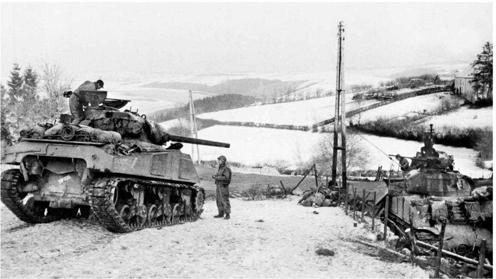
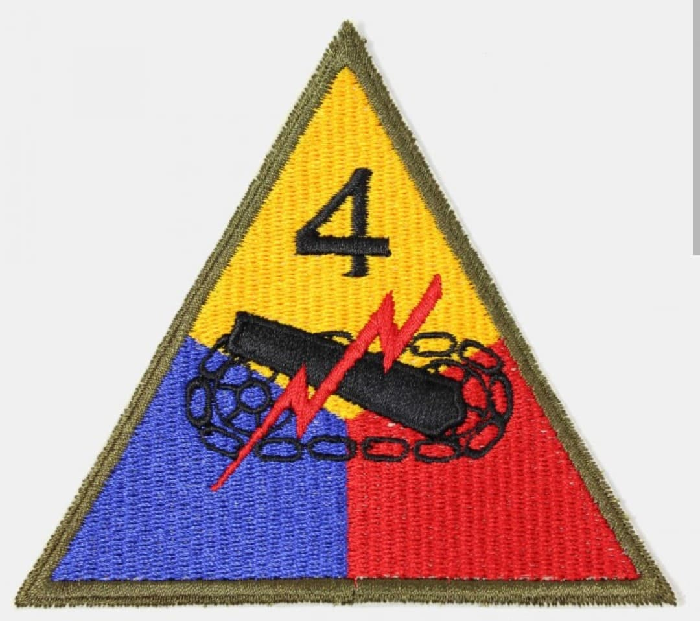
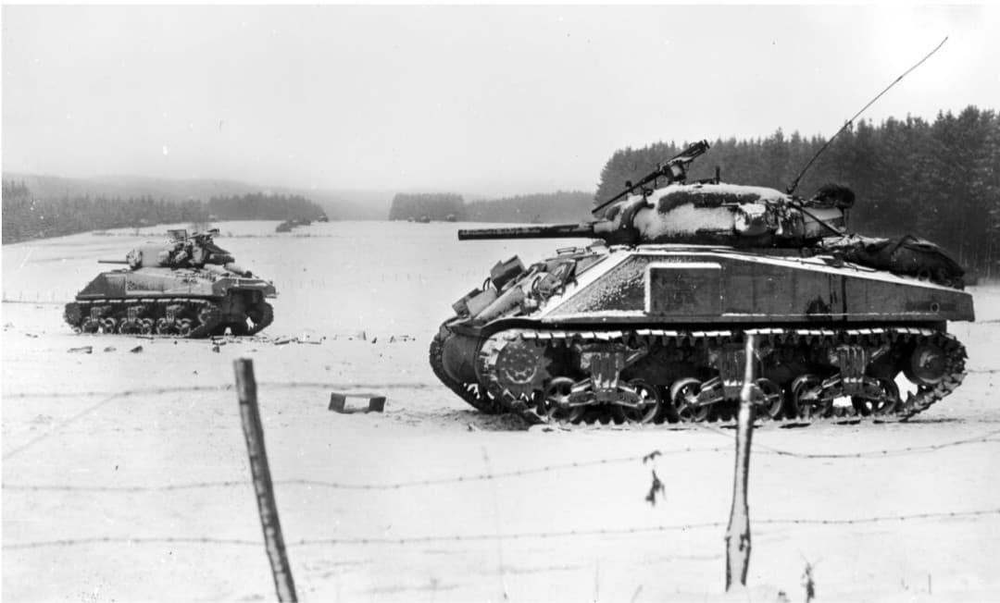

Le fer de lance blindé du général Patton : des plaines de Normandie à la délivrance de Bastogne

La 4th Armored Division (4e division blindée américaine) est l'une des unités mécanisées les plus redoutables et célèbres de l'armée américaine pendant la Seconde Guerre mondiale. Véritable fer de lance de la 3e armée du général George S. Patton, elle s'est forgé une réputation légendaire par sa vitesse d'avance et son agressivité tactique.
Entrée en action après le Débarquement de Normandie, la division s'est illustrée dans la percée d'Avranches, la libération rapide de la France, et surtout la chevauchée héroïque pour briser l'encerclement ennemi au siège de Bastogne.
Activée en avril 1941 au Pine Camp dans l'État de New York, la division est entraînée pour la guerre de mouvement sous le commandement du général **John S. Wood**.
Contrairement à d'autres grandes unités, elle n'a pas adopté de surnom officiel, estimant que ses actions sur le terrain parlaient d'elles-mêmes, ce qui lui valut d'être informellement appelée la division "Sans Nom" (*Nameless*).

Débarquée sur Utah Beach en juillet 1944, la 4th Armored est immédiatement engagée dans l'Opération Cobra. Utilisée pour percer les lignes allemandes en Normandie, elle fonce vers Avranches, ouvrant la voie à l'invasion de la Bretagne et à la libération de vastes territoires français.
Sous l'impulsion de Patton, la division réalise des progressions fulgurantes, contournant les points forts ennemis pour couper leurs voies de ravitaillement et capturer des milliers de prisonniers.

Lors de la contre-offensive allemande dans les Ardennes en décembre 1944, la 101st Airborne Division se retrouve encerclée à Bastogne. Le général Patton réoriente alors sa 3e armée vers le nord dans un changement d'axe historique.
C'est le Combat Command B (CCB) de la 4th Armored Division, mené notamment par le lieutenant-colonel **Creighton Abrams**, qui réussit à percer le cordon allemand le 26 décembre 1944, brisant le siège et sauvant les parachutistes assiégés.
En 280 jours de combats continus, la 4th Armored Division a démontré l'efficacité absolue de la doctrine blindée américaine moderne. Elle demeure aujourd'hui une référence incontournable de l'histoire militaire de la Seconde Guerre mondiale.
Page du Musée HOP WW2 – Section Unité & Divisions